DS-003 · desktop · light

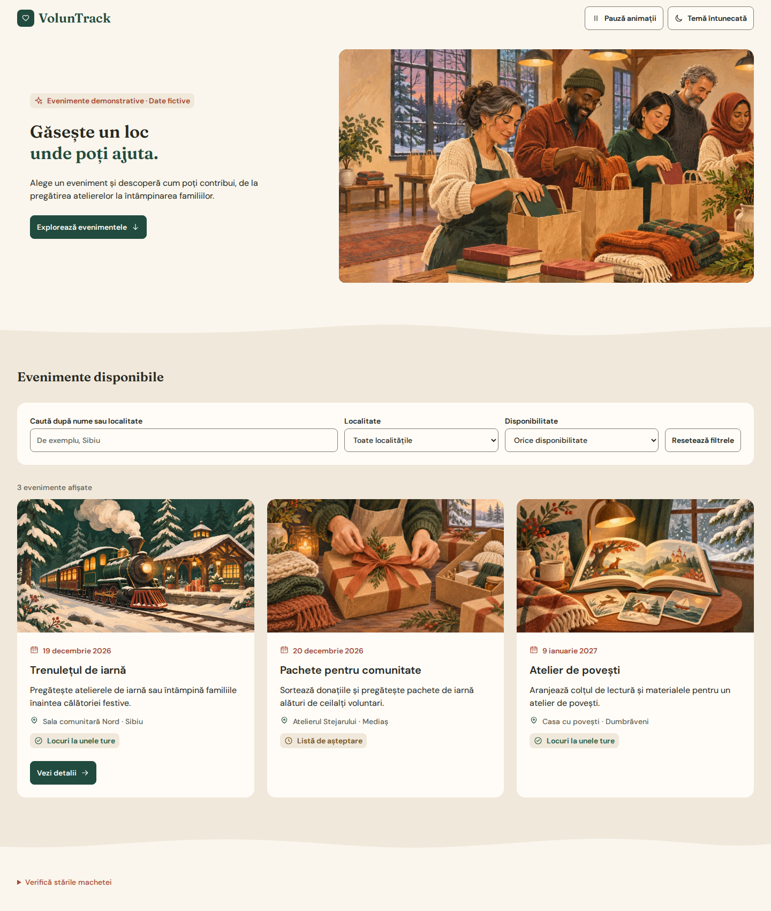

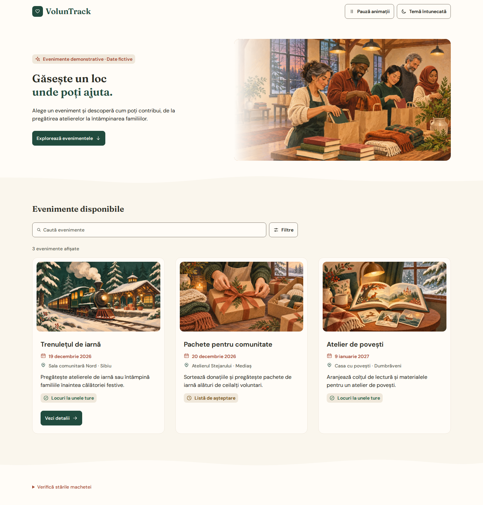
DS-003 · desktop · dark

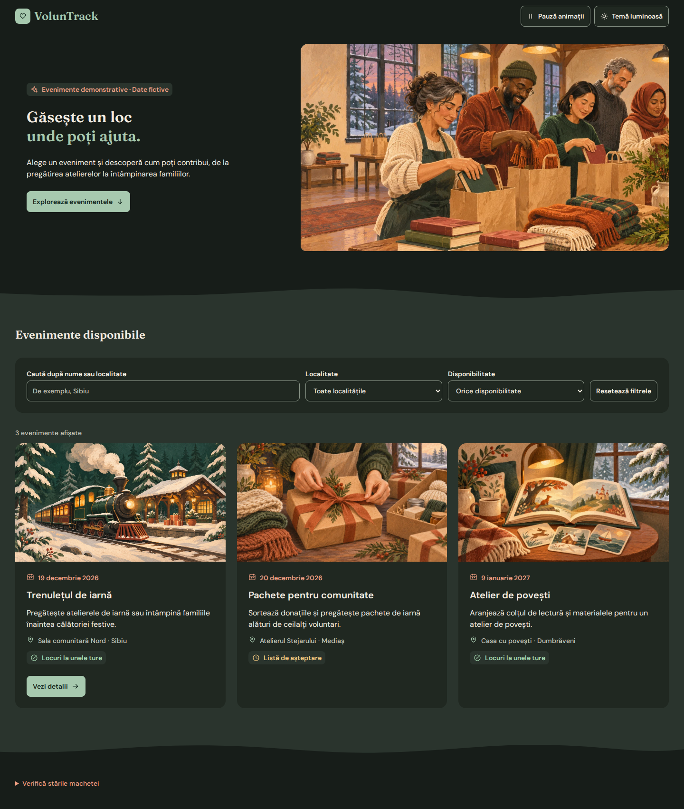

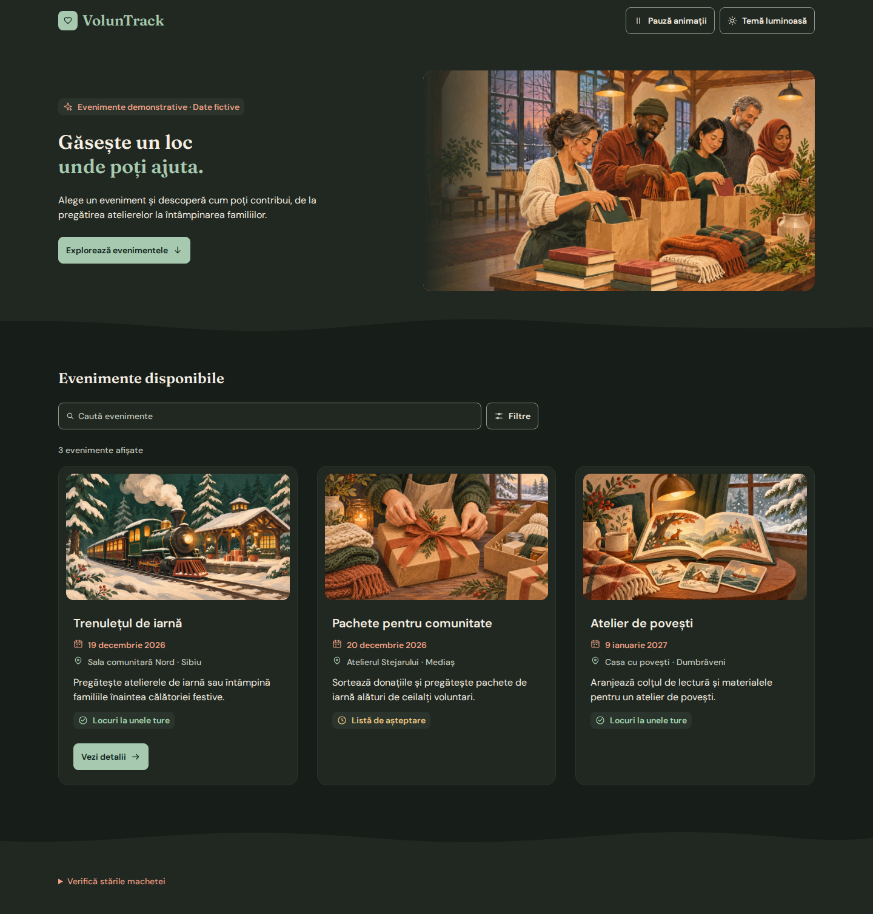
DS-003 · mobil · light

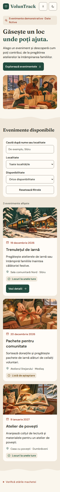

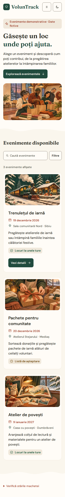
DS-003 · mobil · dark

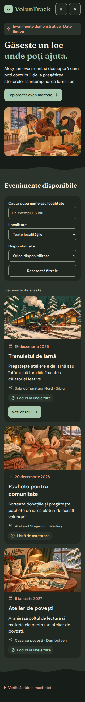

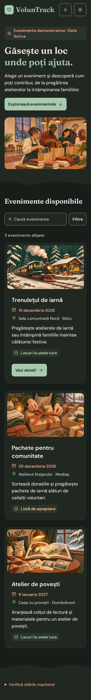
DS-003 · hover pe card · light

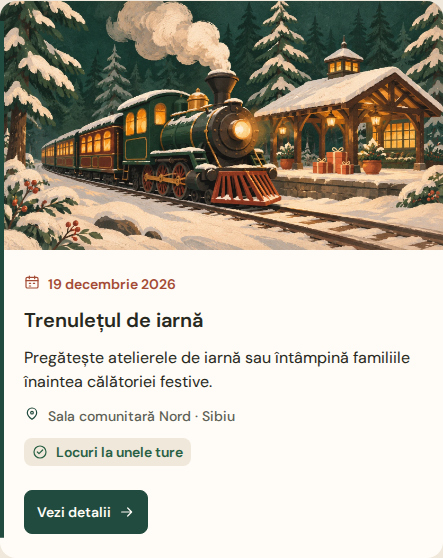

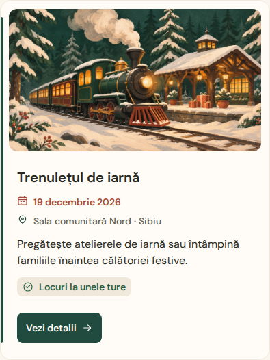
DS-003 · hover pe card · dark

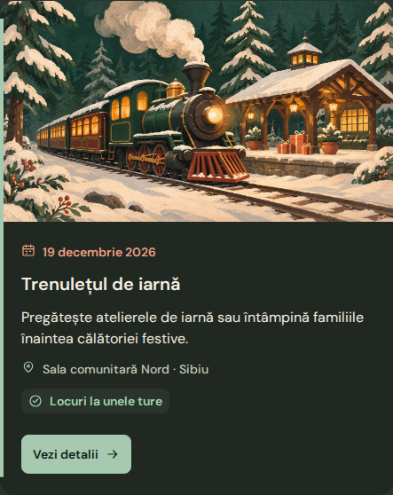

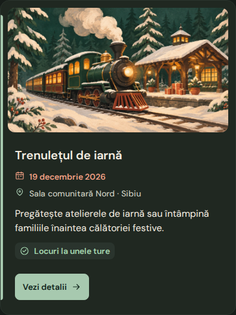
DS-004 · desktop · light

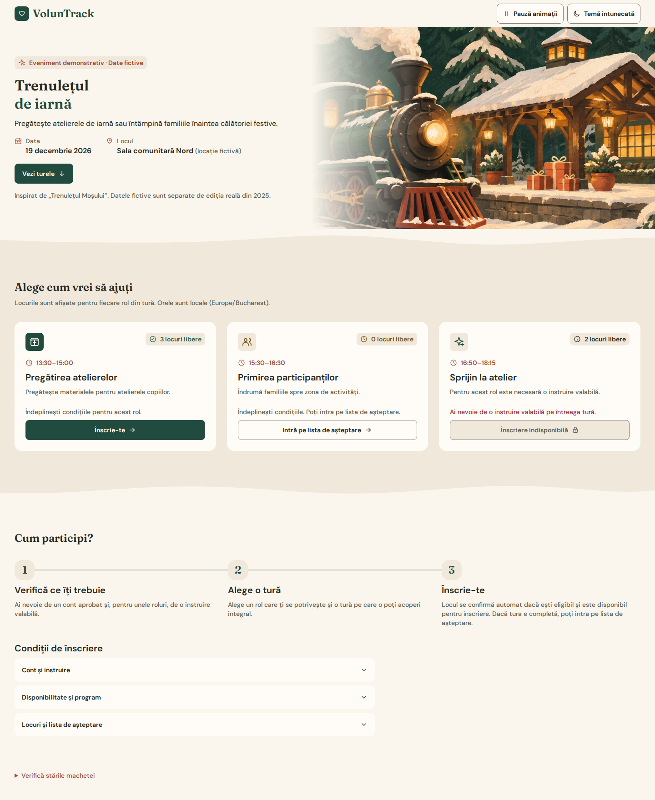

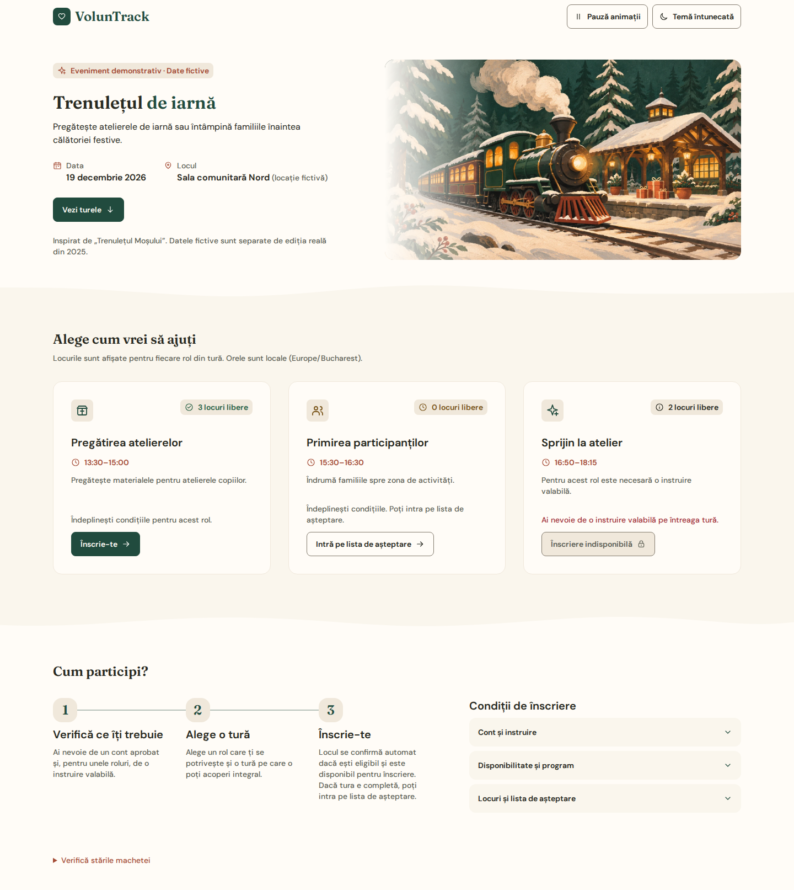
DS-004 · desktop · dark

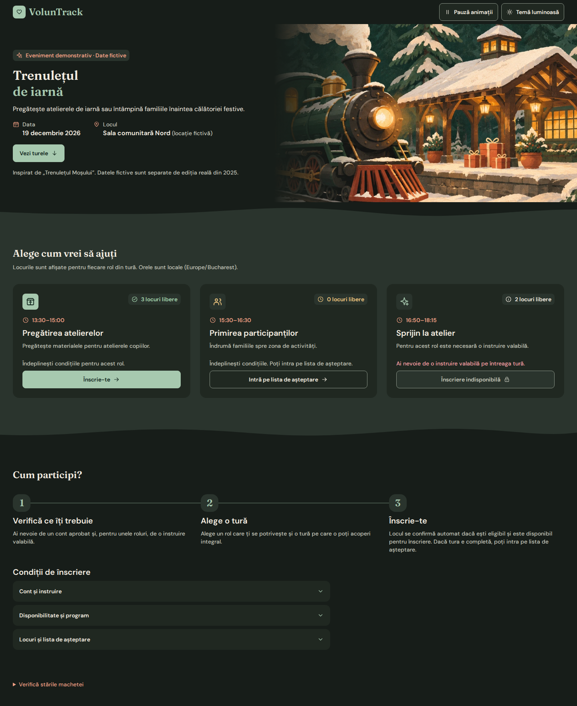

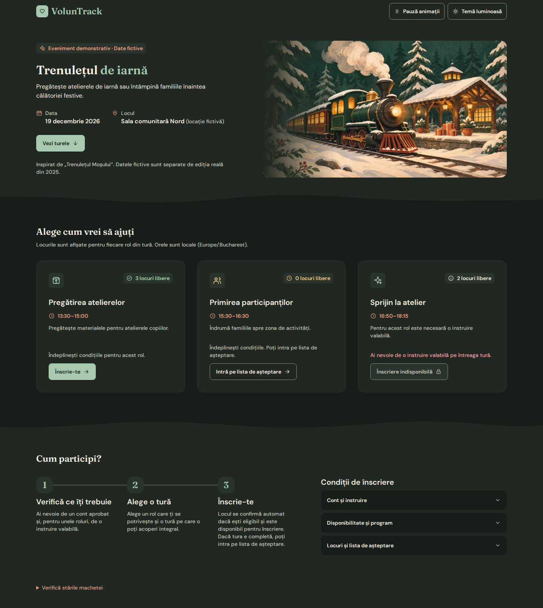
DS-004 · mobil · light

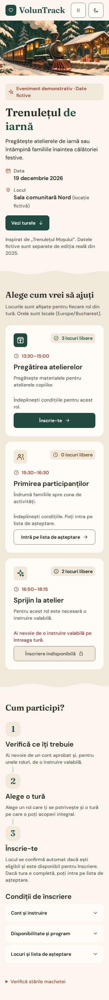

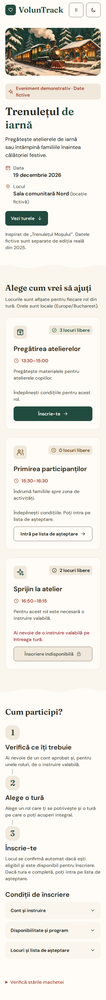
DS-004 · mobil · dark

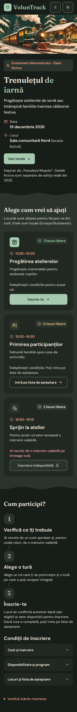

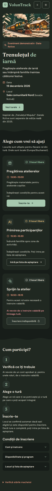